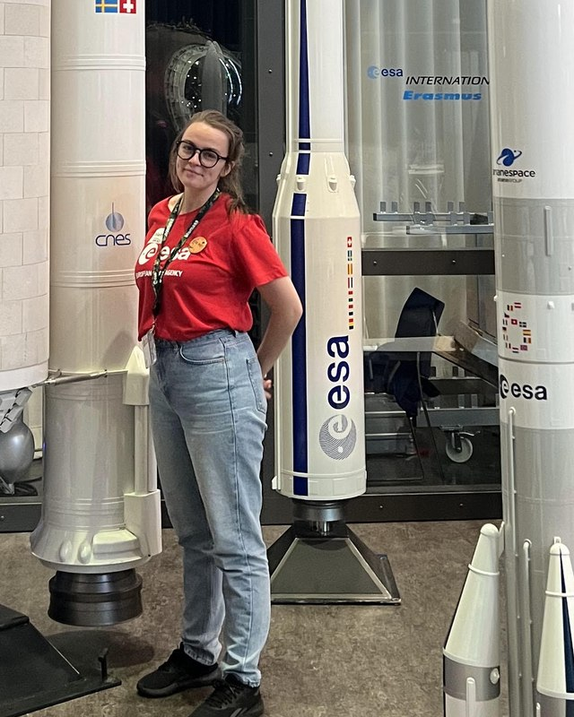

Available for new roles now
Hi, I'm Orlaith.Orlaith Doyle, or Orlaith Ní Dhúill as Gaeilge
I'm a space scientist who works with radar satellite data. I've just spent six months at ESA's ESTEC centre in the Netherlands on the BIOMASS mission, teaching a forest satellite to measure ocean salinity.

ESA ESTEC internBIOMASS mission, May to October 2026
MSc Space ScienceUniversity College Dublin, 2026
Python and SARInSAR, PolSAR, GIS, STAC, Copernicus data
Have a look around
Projects
Ocean salinity from P-band radar, mapping a satellite catalogue, a balloon to the stratosphere.
Work experience
ESA ESTEC, my own tutoring practice, and physics lab work at DCU.
Education
MSc in Space Science and Technology at UCD, BSc in Physics with Astronomy at DCU.
Volunteering
ESA CanSat, school outreach, Astronomy Ireland and GAA coaching.
Achievements
Awards, selections and certifications.
About me
How I work, what I'm good at, and what I'm looking for next.